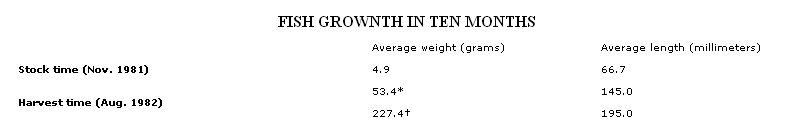
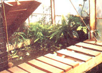
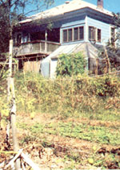
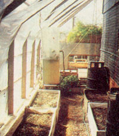

This enterprising family from Atlanta, Georgia, has learned, through trial and error . . .
Many of us lead double lives. We hold jobs during the day, and when we get home, we spend time growing and putting up our food arid trying to live in harmony with the earth. Needless to say, it's a difficult way of life . . . it often puts a strain on the family's time budget, and many of us frequently wonder why we're doing it all.
However, when I visited Judy Bender in her Atlanta home, I was both encouraged and inspired by the steps she and her family have taken toward self-sufficiency. Judy believes in cooperative efforts-between people, and between humans and their environment. And as a result of that cooperation-even though both she and her husband, Don, have jobs away from home and the added responsibility of raising two school-age children-the Benders have accomplished a great deal on their urban homestead.
Don and Judy's 80-year-old house, with its deceptively simple entrance, sits on a busy street in an older downtown neighborhood and looks very much like its neighbors. Inside, the long hallway with highceilinged rooms lining its length is typical of the architectural style of the early 1900's . . . but big surprises wait down in the basement and out in the backyard, where much of the food needed by several families is grown through cooperative effort.
Two acres that extend behind the house sport vegetable gardens, a pond, grapevines and blackberry bushes, a huge compost pile, dwarf fruit trees, and a woodlot. "We, the families in the houses on either side of us, and another family who lives down the street bought this land cooperatively," Mrs. Bender says as she points to the gardens from the back porch swing. "Then we all bought our houses, along with small plots for our own backyards, back from the cooperative, so that each family actually owns its own property. The rest of the land, though, is still owned cooperatively."
Aside from four large gardens (each is spacious enough to feed a family of four), the main focal point in the neatly kept acreage is the pond. "That's where I raise African tilapia," Mrs. Bender, who is director of environmental research at Morehouse College, explains. "The fish are a source of delicious protein, while the green and bluegreen algae in the water are just as valuable. We irrigate the gardens with the algae-rich water, which also contains fish wastes, and it's an excellent fertilizer."
Rainwater from the Benders' steep-pitched roof is channeled down a gutter into an underground pipe that goes to the four-foot-deep, PVC-lined pond, so the water is constantly replenished. Mrs. Bender reports that she uses slightly less than a full $9.00 bag of fish food a year to supplement the fish's diet of algae and natural foods.
The compost pile, another valuable source of garden fertilizer, benefits from the contributions of neighbors both in and out of the cooperative group, especially in the fall, when leaves are plentiful. Garden refuse, rabbit manure, and other waste products are also collected there for general use by the member families. "We share produce, too, which allows us to grow a wider variety of crops," Judy adds. "For example, I've got thornless blackberry bushes here in my backyard, so I may trade some of their fruit for someone's broccoli or such. And even though each family does have its own plot, we often combine our labor. On `rototilling day,' for,example, everyone shares in the work, and our riding lawn mower and radial arm saw are common property."
Judy, Don (who manages a popular neighborhood pub), and their two children are currently experimenting with yet another cooperative venture outside the city. They're purchasing a 120-acre plot, which includes a 14-acre lake, that's located about an hour's drive from their home. This area will also be shared by several families. The purpose of the purchase is to make sure that good land and good water are available for growing food, both now and in the future. "Right now we have to sort of shake the bushes to find people who are interested in cooperative ventures such as land purchases," the scientist and experimenter laments, "but I believe that as our climate changes because of air pollution and other reasons, as we have water shortages because of mismanagement, pollution, and carelessness, and as people become more aware of the chemicals in their storebought foods, cooperative cropland ownership will become important to more and more people."
In addition to procuring and developing shared growing space, Judy and Don also use the area within their home to help warm and feed the family during the winter months. They've set up a small experimental ecosystem in the 65-foot-long sunspace built along the south side of their house. This $5,700 project was made possible by the U.S. Department of Energy's 1980 small-grants program, which was phased out the following year. "We had an 80-year-old house that was really energy-inefficient," Judy explains. "So we designed a system appropriate to our dwelling, and it provided 80% of our heat the first year."
The seven-foot-wide Kalwall shed is attached to an exterior basement wall that's painted black for heat absorption. A small fan sends heat from the greenhouse into the basement, and a louvered door allows cool air to return to the sunroom to be warmed. During the winter, heat passes from the warm basement through the floor of the house. And on exceptionally cold nights, or during extended cloudy weather, a woodstove in the basement keeps everyone cozy.
Home heating is, however, only one of the reasons for the Bender greenhouse. Inside the warm, sunlit room, broccoli, cabbages, lettuce, and kale grow in wooden boxes along the walls. Tucked into an out-of-the-way spot is a rabbit ("he's a one-day composting system"), which has been trained to use a sandbox so the manure can be easily dumped on the compost pile. A 1,500-gallon EDPM rubber-lined pond decorates one corner of the greenhouse, where its water stores solar heat and houses the protein-rich tilapia during the winter months.
Two small drawbridges built of 2 X 4's allow access to the garden across the pond, and are hoisted by pulleys when Judy leaves the greenhouse. This keeps the rabbit from hopping over to the fresh vegetables, and also allows the Mylar-backed walkways to reflect additional light and heat into the pond during the day.
Here, too, algae, which not only serve as fish food but also give off oxygen, grow in a delicate balance with the tilapia. Beautiful water hyacinths clean the water of excess ammonia, a waste product of the fish, and two aquarium pumps further boost the oxygen level. A submersible pump at one corner of the pond's slanted bottom periodically removes nitrogen- and waste-rich water into a five-foot-tall Kalwall tube. This round holding tank performs double duty by allowing the dark water to collect additional solar heat for release at night and by letting the most fertile liquid settle to the bottom, where it can be drained to be used to moisten and fertilize the growing plants. A garden hose is attached to a faucet at the bottom of the tank, and once the tank's richest bottom water has been used, leftover liquid is siphoned into a smaller second tank and later fed back into the pond.
"I've started keeping mostly females here," Judy explains, "and using this as a reproduction pond. In the spring I transfer the young fish to the outdoor pool, where they will reach a weight of about a pound during the summer. We'll harvest them in late summer and freeze the catch to eat until next harvest. Any fish not large enough to eat are taken back inside and allowed to grow over the winter."
Mrs. Bender acknowledges that her work in the laboratory at Morehouse College, where her special interest is blue-green algae, is a basis for some of her experiments on her urban homestead. But the ecosystem she maintains in her greenhouse helps keep her laboratory work in perspective. "No matter what scientists tell us, and no matter how many papers and research data we read," she contends, "it's small, homebased efforts like this one that will ultimately serve people. Everyone has to try his or her own methods and find out what works best and most economically in a given situation. It's the small-scale individual and cooperative experiments that will help us discover the real secrets of feeding ourselves in the future."
As a scientist, Judy keeps careful records of the triumphs and failures of her microcosm. The successes, of course, keep the house warm, maintain a natural cycle in the pond, and produce food for the family. But the problems are also valuable for their role in teaching Mrs. Bender how to operate her "farm" more effectively. A few notes from her log show some of the lessons learned in four years:
Pond temperature. Maintaining proper indoor pond temperature can be a problem in the winter, since the tilapia require a minimum of 47 to 50°C. Although their lack of temperature tolerance is a disadvantage, tilapia have other characteristics that make them preferable for this type of system. They tolerate poor water conditions, gain weight rapidly, and harvest the pond algae for food. Catfish are more temperature-tolerant and will also feed on algae, but they're more sensitive to ammonia and to the low oxygen levels of the water.
Algae culture. Blue-green algae are difficult to maintain during the winter months. In general we simply do not understand the ecology of the algae in either the Kalwall tanks or the pond. Increases in growth followed by dying back of the bloom sometimes seem to be unrelated to temperature and light conditions. And the culturing of large amounts of algal biomass still presents a number of unsolved problems.
Greenhouse. A greenhouse that is expected to provide both home o heating and vegetable production usually requires some compromises. For example, black surfaces are necessary for heat storage, but they decrease the indirect light needed for good plant growth.
Insect control. Biological methods of insect control can be both difficult to master and time-consuming. Aphids and whiteflies devoured the tomato plants in 1981. They could probably be controlled by ladybugs, but this would require maintaining beetle culture and releasing them at the first sign of infestation. I opted to discontinue growing tomatoes, which has decreased the insect problem dramatically.
Water supply. It's necessary to occasionally add water to the fishpond. We intend to build a cistern to store roof runoff water. This would supply both fishpond and algae tanks, as well as providing water for the garden and greenhouse plants.
And just how long will it take for Judy and Don's project to pay for their investment in it? "I believe that a payback within ten years is easily achievable, and our system should pay for itself in about seven. I stick with it, I enjoy what I'm doing, and I'm able to share it with my neighbors. Most anyone with a will can try what we're trying here. It will take a lot of planning, patience, and work, though."
Cooperation and a desire to learn are the keys to the Benders' story. Judy has copied or modified experiments previously conducted at the New Alchemy Institute, the Farallones Institute, and THE Mother Earth News Eco-Village, and she has also studied numerous scientific research papers on tilapia and solar aquaculture. "I do my little bit here in Atlanta, and other people do theirs somewhere else," she says. "We all have to share the responsibility because a single person cannot do it all. We have to share our knowledge, just as we swap vegetables or pool our money to purchase property. The future may well hinge on how well we're all able to learn from each other and from nature."
|
 |
 |
 |
|
 |
|
|